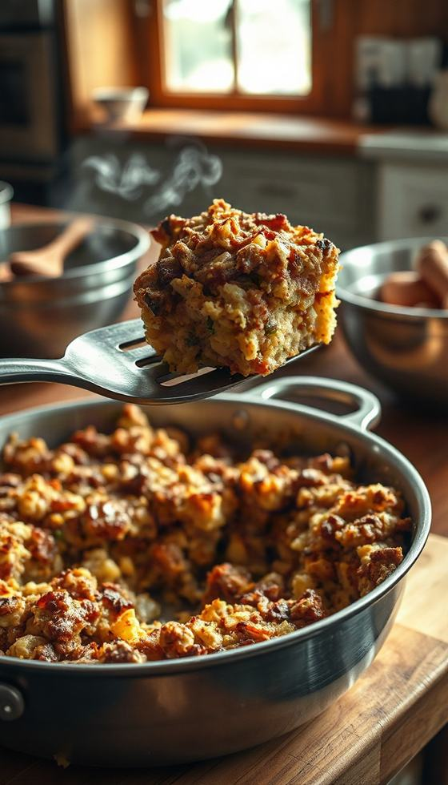
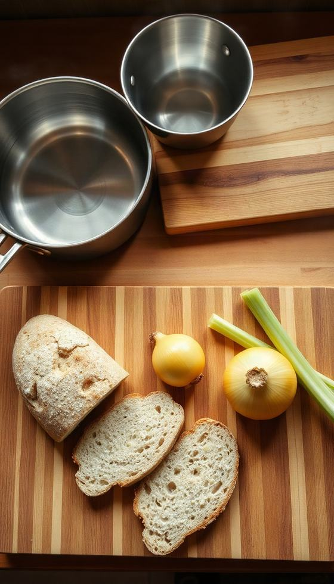
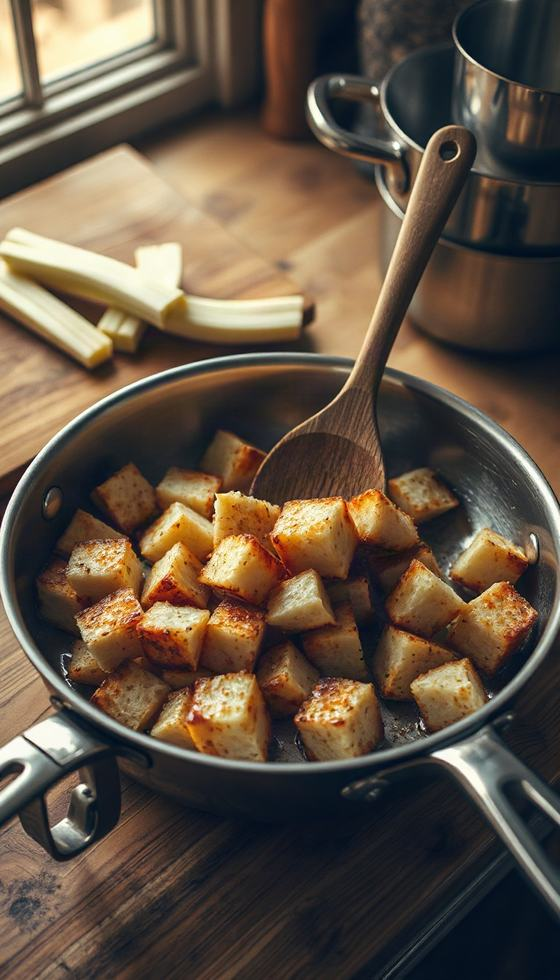
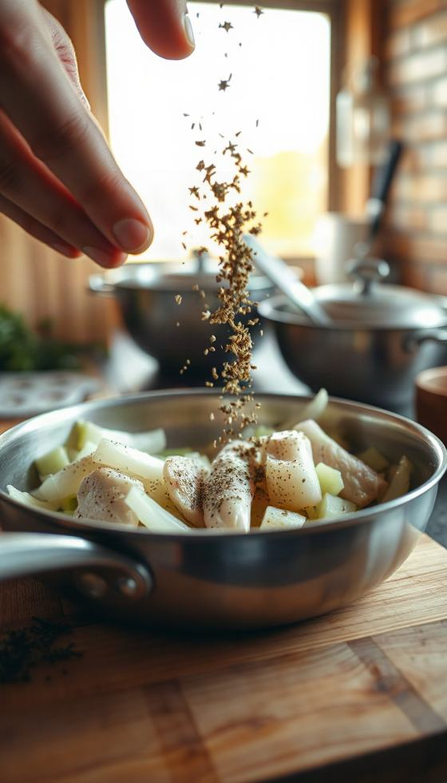
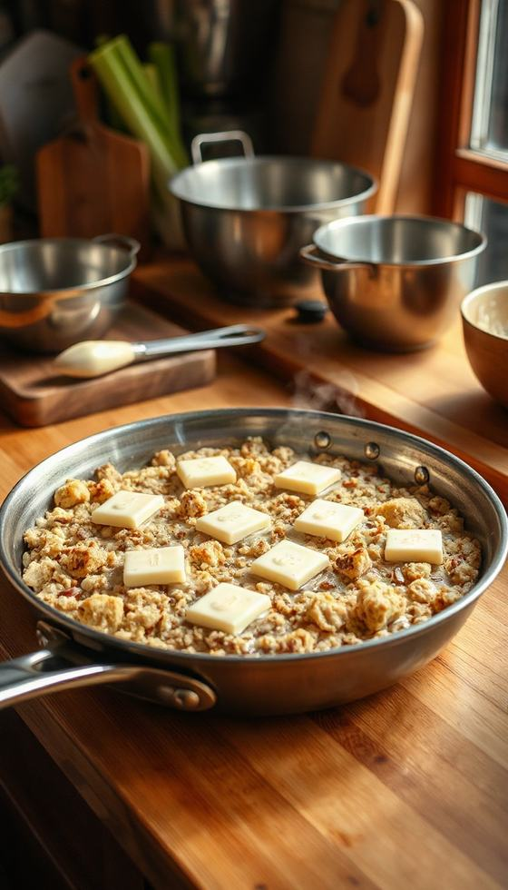

Mistake Monday
Crispy-Edged Skillet Stuffing
About $4.35* · 4 servings · 18 min
*Prices are estimates and may differ from what you pay. How we price recipes
Crispy-edged skillet stuffing, no more soggy mush, $1.09 a serving.





Ingredients
- 340 g day-old white bread (about half a 675 g loaf, 9-10 slices), cut into 2 cm cubes
- 4 tbsp (56 g) butter, divided
- 1 medium onion (about 150 g), diced
- 2 celery ribs, diced
- 1 tsp poultry seasoning (or dried sage)
- 1 chicken bouillon cube dissolved in 300 ml (1 1/4 cups) hot water
- Salt and black pepper to taste
Steps
- Boil the kettle and dissolve the bouillon cube in 300 ml hot water. Cut the bread into 2 cm cubes (fresh bread is fine; the toasting step dries it out). About 2 minutes.
- Melt 2 tbsp butter in a 12-inch skillet over medium heat. Add the bread cubes, toss to coat, and toast 5-6 minutes, stirring every minute or so, until golden and dry on the outside. Tip them into a bowl.
- In the same skillet, melt 1 tbsp butter. Add the onion, celery and a pinch of salt and cook 4-5 minutes until soft and translucent. Stir in the poultry seasoning for 30 seconds until fragrant.
- Return the toasted bread to the skillet. Pour the broth evenly over the top in two additions, folding gently after each, until every cube is moistened but there is no liquid pooling in the pan. Press everything into an even layer with a spatula.
- Dot the top with the last 1 tbsp butter. Cook undisturbed over medium heat for 4-5 minutes until the bottom is deep golden and crisp (lift an edge to check).
- Flip in sections with a spatula and cook 2-3 minutes more to crisp the second side. Season with pepper and more salt if needed, then serve hot.
What you'll need
Gear links go to Amazon (Amazon.ca, or Amazon.com in the US). As an Amazon Associate I earn from qualifying purchases, at no extra cost to you.
Watch the videoMore $5 recipes
About the prices: they're estimates, not quotes. Since Nov 2026 they're based on Statistics Canada's monthly average retail prices where an item is listed (Open Government Licence - Canada), otherwise on typical Canadian grocery prices, and count only the amount of each ingredient used, not whole packages. What you pay will vary by store, location, brand, sales, taxes and date, and any pantry staples you need to buy will add to it. Recipe visuals and narration are AI-generated.